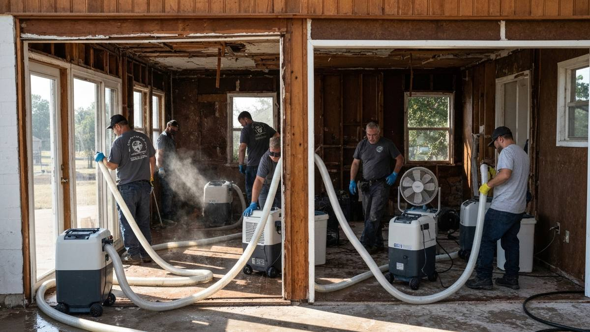

Catoosa is a Route 66 community of about 8,000 residents in Rogers County, famous as home of the Blue Whale of Catoosa, one of America's most photographed roadside attractions. More practically, Catoosa is home to the Port of Catoosa, Oklahoma's inland port connecting Tulsa to the McClellan-Kerr Arkansas River Navigation System. The community sits at the confluence of Route 66 nostalgia and modern industrial activity, with residential neighborhoods ranging from modest established homes to newer subdivisions on the eastern Tulsa fringe. Proximity to the Verdigris River means real flood risk, and Oklahoma's severe weather means Catoosa homeowners regularly deal with water intrusion. Tulsa Water Damage Pros covers all of Catoosa 24/7.

Our Water Damage Restoration Process
- 24/7 Emergency Response — We answer calls day and night and dispatch to Catoosa immediately.
- Assessment & Documentation — We inspect damage and document for your insurance claim.
- Water Extraction — Industrial equipment removes standing water fast to limit structural damage.
- Drying & Dehumidification — Air movers and dehumidifiers run until moisture readings are normal.
- Mold Prevention & Restoration — We treat affected areas and restore your Catoosa home to pre-loss condition.
Why Catoosa Residents Call Tulsa Water Damage Pros
- Verdigris River Awareness — We know Catoosa's flood-prone areas and respond with appropriate extraction equipment.
- Route 66 Corridor Coverage — We serve Catoosa, Claremore, Collinsville, and all Rogers County Route 66 communities.
- 24/7 Emergency Response — Water damage emergencies don't wait — neither do we.
- Commercial & Residential — We handle both residential homes and light commercial properties in the Catoosa area.

Frequently Asked Questions — Water Damage in Catoosa
Can you respond to water damage emergencies in Catoosa?
Yes. Catoosa is approximately 12 miles east of downtown Tulsa via I-44, and we reach most Catoosa properties within 30 to 40 minutes. We provide 24/7 dispatch and full restoration services throughout Rogers County.
Is Catoosa at risk for flooding?
Yes. Catoosa sits near the Verdigris River and the Port of Catoosa waterway, Oklahoma's inland port. Low-lying properties near the river are at genuine flood risk during heavy rain events. We have experience with flood-related restoration in Catoosa.
What should Catoosa residents know about water damage response times?
Because Catoosa sits just east of Tulsa on I-44, we can reach it as fast as many parts of Tulsa itself. Our response time to most Catoosa addresses is under 40 minutes for emergency calls — faster than most national restoration chains.
Water Damage in Catoosa? Call 24/7
Every hour counts. We serve Catoosa with rapid response and full restoration services.
📞 Call (918) 723-2096